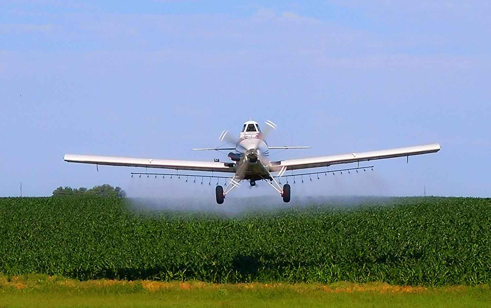

Agri-Air is an agricultural business located in South central South Dakota. We specialize in Ag Aviation, Agronomy Services, and Custom Farming. Our purpose is to help our customers succeed by providing superior products and creative solutions in a way that builds trust, loyalty, and respect.